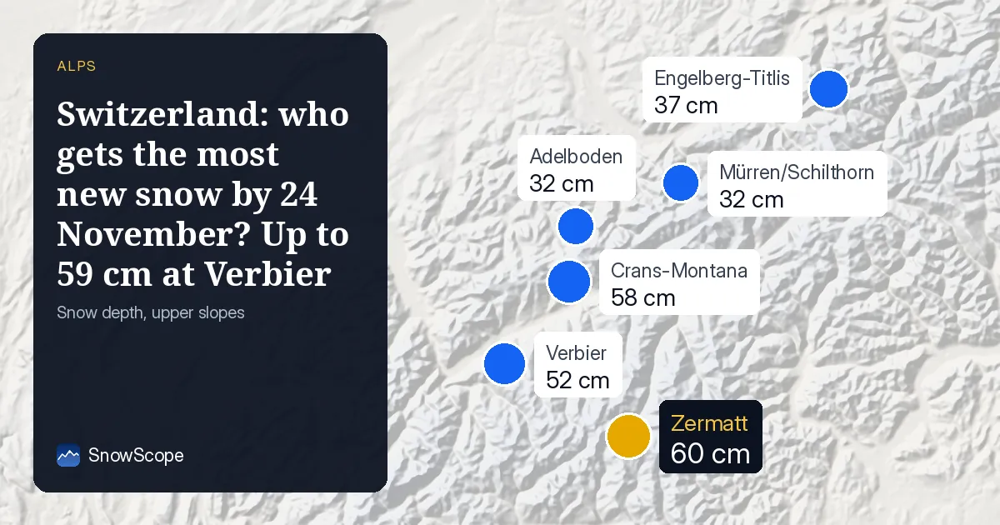

Switzerland: who gets the most new snow by 24 November? Up to 59 cm at Verbier
Snow check for Saturday 21 November: 14 of 14 resorts in Switzerland are white up top, the deepest is Zermatt with 60 cm.
See the live snow forecast for Verbier in the SnowScope appSnow depth, powder alerts and the 3D map, free.
Snow on the way
By 24 November the forecast gives Verbier 59 cm, Crans-Montana 58 cm and Engelberg-Titlis 51 cm.
| Resort | Snow depth | New snow, 72 h | Coming, next days | Top |
|---|---|---|---|---|
| Verbier | 52 cm | 82 cm | 59 cm | 3,304 m |
| Crans-Montana | 58 cm | 74 cm | 58 cm | 2,872 m |
| Engelberg-Titlis | 37 cm | 58 cm | 51 cm | 3,040 m |
| Zermatt | 60 cm | 76 cm | 48 cm | 3,872 m |
| Adelboden | 32 cm | 52 cm | 47 cm | 2,193 m |
| Mürren/Schilthorn | 32 cm | 54 cm | 45 cm | 2,949 m |

Fresh snow, last 72 hours
Most new snow in 72 hours: Verbier 82 cm, Zermatt 76 cm and Crans-Montana 74 cm.
Resort by resort
Verbier reports 52 cm up top; the lifts reach 3,304 m. Fresh snow: 82 cm in three days, forecast 59 cm by 24 November.
Crans-Montana reports 58 cm up top; the lifts reach 2,872 m. Fresh snow: 74 cm in three days, forecast 58 cm by 24 November.
Engelberg-Titlis reports 37 cm up top; the lifts reach 3,040 m. Fresh snow: 58 cm in three days, forecast 51 cm by 24 November.
Zermatt reports 60 cm up top; the lifts reach 3,872 m. Fresh snow: 76 cm in three days, forecast 48 cm by 24 November.
Snow depth, resort by resort
Half of the 14 resorts here have more than 32 cm up top, half have less.
The rest of the top five: Crans-Montana (58 cm), Verbier (52 cm), Aletsch Arena (40 cm) and Engelberg-Titlis (37 cm).
Pick for a short trip
For a short trip, Verbier is the pick: 52 cm on the upper slopes now and 59 cm more by 24 November.
For a short trip, combine a cheap day pass in the morning with the best snow on the highest lifts.
Beyond the groomers
Powder is possible on the upper slopes after 82 cm of new snow. Tours and off-piste only with the avalanche bulletin read, a transceiver, shovel and probe.
A fresh layer like this makes the difference between scraped pistes and soft, grippy snow, especially on the steeper runs.
Tips for skiers
- Early season: wax your skis, the snow is often abrasive.
- Off-piste only after reading the avalanche bulletin.
- Check which lifts are open before you drive.
About these numbers
Resort snow depths are the deepest snow on the resort's upper slopes on the date shown; they are estimates for an area, not a measurement at one point. Forecasts can change. Always read the official avalanche bulletin before going off-piste.
Cite this report
For research, teaching or the press: the numbers and charts are free to reuse under CC BY 4.0 with this citation.
SnowScope (2026), Switzerland: who gets the most new snow by 24 November? Up to 59 cm at Verbier, https://snowscope.app/blog/en/2026/11/neuschnee-schweiz-21-november-2026.html, accessed 2026-11-21
SnowScope (Atlas Labs). (2026, November 21). Switzerland: who gets the most new snow by 24 November? Up to 59 cm at Verbier. SnowScope snow reports. https://snowscope.app/blog/en/2026/11/neuschnee-schweiz-21-november-2026.html
BibTeX
@misc{snowscope2026neuschneeschweiz21novemb,
author = {{SnowScope (Atlas Labs)}},
title = {Switzerland: who gets the most new snow by 24 November? Up to 59 cm at Verbier},
year = {2026},
month = nov,
howpublished = {\url{https://snowscope.app/blog/en/2026/11/neuschnee-schweiz-21-november-2026.html}},
note = {Published 2026-11-21 11:59 UTC; accessed 2026-11-21}
}· CC BY 4.0 · Methods, data and tools →
Verbier: snow and temperature by height, this winter vs last (tools) →
Follow Verbier
Free: a message when fresh snow is coming, and the forecast every morning.
More snow reports

Davos forecast for 23–29 November: 16 cm at the top, Thursday 26 November heaviest. Snow line sits high; best on Parsenn.

Andermatt forecast for 23–29 November: 21 cm at the top, 19 cm mid-mountain, 15 cm at the base. Best snow on Wednesday 25 November.

Saas-Fee lifts reach 3556 m where our snow history shows 100 % of past winters have at least 30 cm of snow by mid-December.